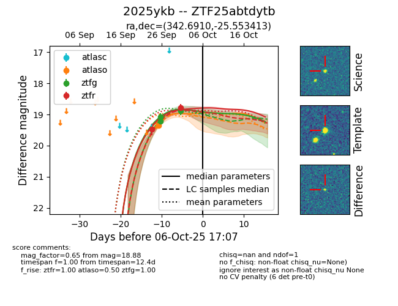
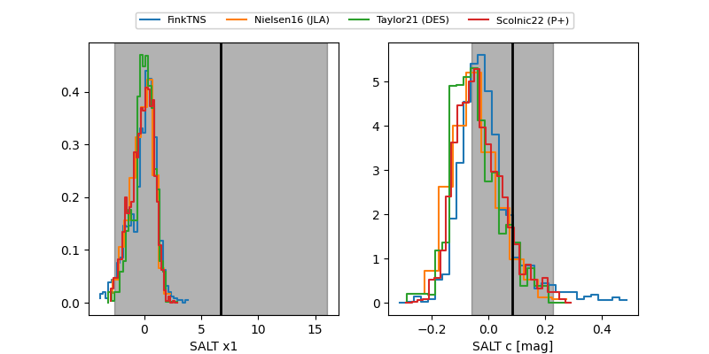

FINK: ZTF25abtdytb
Lasair: ZTF25abtdytb
ALeRCE: ZTF25abtdytb
TNS: 2025ykb
YSE: 2025ykb
ZTF25abtdytb (ztf,fink)
2025ykb (tns,yse)
equatorial (ra, dec) = (342.6910,-25.55341)
galactic (l, b) = (29.3680,-62.98230)


last atlaso=19.36, ztfg=18.88, ztfr=18.78
1 atlaso, 3 ztfg, 2 ztfr detections